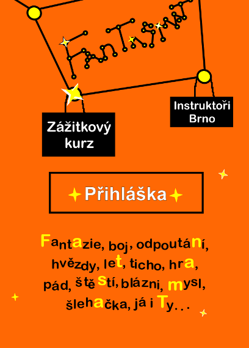

Zážitkový kurz | |
|
Metoda, které se v čechách nejčastěji říká zážitková pedagogika, je jeden ze způsobů, jak realizovat vzdělávací a seberozvojové kurzy. Nejúčinější bývá při kurzech pro dospívající a mladé dospělé, kteří jsou ochotni fungovat ve společenství ostatních a jsou zvědaví na zážitky, byť ne úplně obvyklé. Vycházíme z principu, že nejlépe se člověk učí vlastní zkušeností - a to ideálně v bezpečném prostředí. Jinak řečeno, na takovém kurzu se nabízí široká mozaika aktivit, u kterých nejde pouze o zábavu a zabití volného času, ale také o možnost propojení s reálným životem, vyzkoušením si něčeho nového či možností podívat se na sebe samého z nečekaného úhlu. Může jít o programy zaměřené na spolupráci nebo překonávání náročných úkolů, širokou škálu činností rozvíjejících naši přirozenou tvořivost, divadelní a dramatická cvičení, atraktivní sportovní aktivity, diskuze nad ožehavými tématy, psychohry a nebo prosté bytí prohromadě s podobně naladěnými lidmi. |

|

|